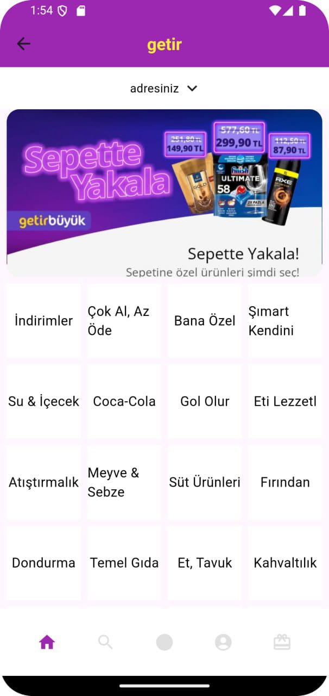
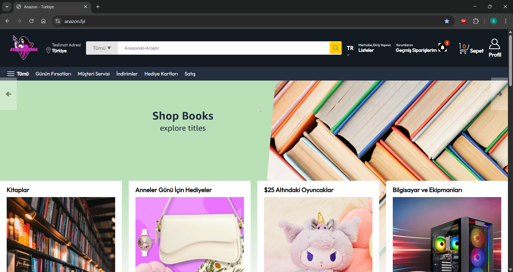
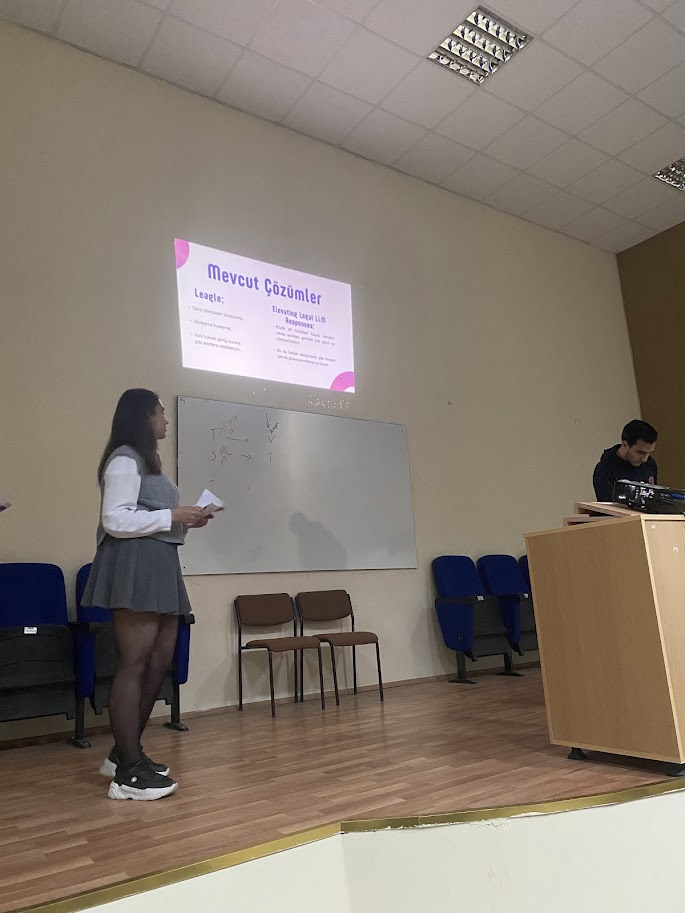
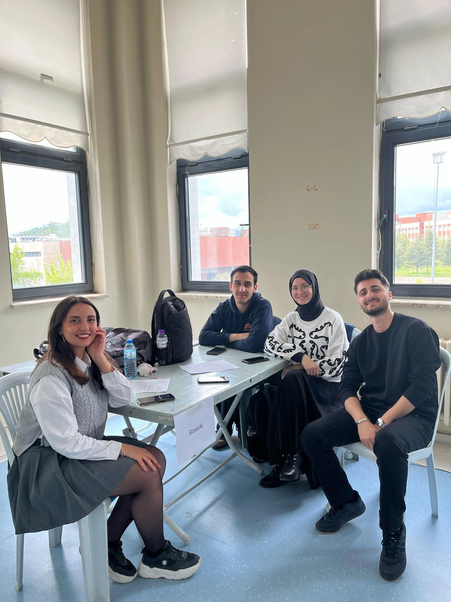

🚀 My Projects
✨ Current Project I'm Working On
🧠 Zemu - RAG-Based AI Education Assistant
Zemu is an innovative web platform supported by RAG (Retrieval-Augmented Generation), aiming to improve middle school students' problem-solving skills. Unlike standard AI tools, it provides guided hints strictly following pedagogical rules instead of giving the answer directly, thus encouraging 'learning from mistakes'.
Technical Infrastructure of the Project:- Data Pipeline: A custom Python infrastructure that analyzes and digitalizes complex PDF test books using Mistral OCR, automatically detecting and repairing erroneous questions.
- Hybrid AI: An advanced memory system combining the fluent language processing capacity of Mistral API with local Ollama (nomic-embed-text) models.
- User Experience: While students solve interactive tests, they can receive real-time and context-aware guidance from the animated Zemu character floating in the corner of the page.
This project is actively being developed on the integration of modern web technologies and advanced artificial intelligence architectures into education. 💻
🤖 Bluetooth Controlled Obstacle Detecting & Line Following Vehicle
I used Arduino Uno in this project developed in the Microprocessor-Based Controllers course. My vehicle can follow a line and can also be controlled manually via Bluetooth. It can avoid obstacles thanks to its sensors.

📱 Flutter UI Design
As part of TechCareer's Flutter Builder Bootcamp program, I developed projects on UI design and state management in Flutter. In this project, I coded mobile application interfaces according to modern design principles.

🛒 Amazon Clone
In this project, I designed an Amazon-like e-commerce interface using HTML, CSS, and JavaScript. The page includes basic features such as product listing, adding to cart, and responsive design. Although the project is still under development, it has a structure very close to Amazon's website in terms of design. The backend connection is not active yet, but you can inspect the project content from the video.

🚀 FÜZE - Artificial Intelligence Entrepreneurship Program
Within the scope of the From Idea to Product AI Entrepreneurship Program (FÜZE) organized in cooperation with SDÜ and TÜBİTAK, I developed an AI-based startup project with my team. During this process, I strengthened my business model development, presentation preparation, and teamwork skills.

